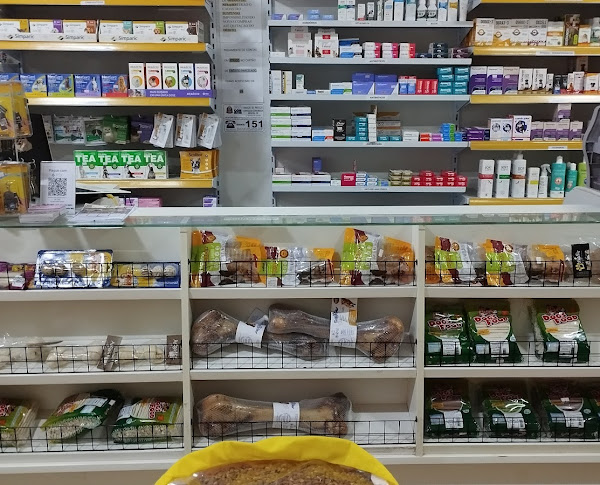

O pet shop Arca de Noé oferece serviços de banho e tosa de alta qualidade, juntamente com atendimento veterinário especializado. Nosso compromisso é proporcionar o melhor cuidado e carinho para o seu pet. Visite-nos em Jose Bonifacio e confira a excelência dos nossos serviços para o bem-estar do seu animal de estimação
Sobre Nós
Bem-vindo à Arca de Noé Pet Shop, o seu destino definitivo para todos os cuidados e necessidades do seu amado animal de estimação! Desde a nossa fundação, dedicamo-nos apaixonadamente a fornecer um ambiente acolhedor e serviços excepcionais para todos os tipos de pets e seus tutores...Produtos
 Para mais informações clique aqui!Serviços
Os serviços oferecidos pelo Pet Shop Arca de Noé são: Banho e Tosa Profissional: Banho com produtos de qualidade e adequados para cada tipo de pelagem. Tosa personalizada de acordo com as preferências do cliente e as necessidades do animal. Tratamento de higiene, incluindo limpeza de orelhas, corte de unhas e higienização bucal...Dicas e Cuidado
Aqui no no Pet Shop Arca de Noé nós oferecemos dicas para cuidar dos seus pets com segurança e amor!1. Alimentação Balanceada: Ofereça uma dieta adequada para a espécie, idade e tamanho do animal. Consulte um veterinário para orientações sobre a quantidade e o tipo de alimento mais adequado. Evite alimentos prejudiciais à saúde do animal, como chocolate para cães e alimentos tóxicos para gatos...